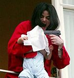

Adivinanza
 De: La Frikipedia, la enciclopedia extremadamente seria.
De: La Frikipedia, la enciclopedia extremadamente seria.

|
¡LISTA!
Este artículo o sección no es más que una torpe lista. Si crees que vale la pena, edítalo para que tenga párrafos y esas cosas.
|
Una adivinanza es (Adivina) que fue creado por (Quien?) Para conmemorar (Lo que tu sabes) ademas, ¿a quien le importa si se pueden o no resolver las adivinanzas? A lo que íbamos, una adivinanza consta de: Palabra + acentos, es decir, si sumamos esas partes, obtenemos la solución.
Partes de la adivinanza
 Negro por dentro, blanco por fuera su cara es deforme y su pelo de ratera... adivina
Analizamos una adivinanza:
- oro parece platano es, ¿Que coño es?
Como pueden observar, la solución es Homero Simpson oro, por que, ustedes ya comprenden que esto va con mala intención,
Cosas de las adivinanzas que debes saber
- Existen muchas
- En ellas se esconde el secreto del universo.
- Las creo doraemon y tiene la clave para resolverlas todas
- Tu eres el creador de alguna de ellas.
- Nunca debiste enterarte del secreto de la adivinanza de arriba.
- Las adivinanzas son cosa de satanás.
- Las sectas crean las adivinanzas.
- Tú jamas crearas una adivinanza que tenga éxito.
- Hay muchas teorías de como surgieron.
- Pueden acabar volviéndote loco como al tipo de la foto.
- No seas tonto, no puedes MATAR una adivinanza.
- A la gente les hace gracia.
Murieron por no adivinar su destino
- Benito Ramirez murió mientras se fumaba un cigarrillo en unas minas abandonadas. Fue víctima de las siglas: T.N.T.
- Jorjito Perejil (1980-2001) nunca descansara en paz, no hasta saber que quiere decir R.I.P
- Jesus (Vivo-Muerto-Resucitó) siempre quiso saber por que le ponen I.N.R.I en los crucifijos.
Ellos, al igual que otros pocos, jamas adivinaron el porque de sus destinos.
Adivinanzas famosas
- Habbo: Adivina adivinanza que tiene estarqui metido en el ano?
- Neopets: Oro parece Neozofilianoes, ¿Que es?
- Comida: Adivina adivinanza, que tiene el gordo en la panza?
- Logica: Si un balleno pone un huevo, ¿flotara o se hundira?
- Familia: ¿Quien mató a tia Agatha?
- Curioso: ¿DOnde esta Wally?
- Macabro: En estebanco murio tu madre, ¿Quien la mato?
Referencias
Autor(es):
- El Sevillano
- Dracobulos
- Veni Vidi Vici
- Kevrochi
- Genn
- Enx123
- Supertira23
- Yo no tu
- Genericool
- Cris440
Frikipedia 2005-2016, Licencia
GFDL 1.2 - Extraído por FrikiLeaks